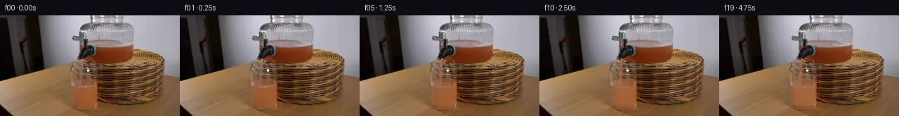

![首帧]()

Round 00
2026-11-05T03:00:54.656139+00:00像素候选变化代码 +270/−0inspection 更新
pixels cf4ed91fab81397e · code 671529722f367560
查看本轮 generate.py 真实 diff
--- previous/generate.py
+++ current/generate.py
@@ -0,0 +1,270 @@
+"""Deterministic source-preserving pixel continuation; no image models/engines.
+
+The source is only first_frame.png. Geometry comes from OBSERVATION.md.
+Rendering uses NumPy RGB compositing, subpixel coverage, analytic flow,
+shading, and local refractive sampling. No image-view tool is needed.
+"""
+from pathlib import Path
+import json
+import numpy as np
+from PIL import Image, ImageDraw
+from scipy.ndimage import map_coordinates, gaussian_filter
+import artifact_io
+
+ROOT = Path(__file__).resolve().parent
+AA = 4
+H, W = 144, 256
+SOURCE = np.asarray(Image.open(ROOT / 'first_frame.png').convert('RGB'))
+assert SOURCE.shape == (H, W, 3)
+Y, X = np.mgrid[0:H*AA, 0:W*AA].astype(np.float32)
+X = (X + .5) / AA - .5
+Y = (Y + .5) / AA - .5
+SRC = np.repeat(np.repeat(SOURCE.astype(np.float32), AA, axis=0), AA, axis=1)
+LY, LX = np.mgrid[0:H, 0:W].astype(np.float32)
+
+
+def smooth(a, b, v):
+ v = np.clip((v-a)/(b-a), 0., 1.)
+ return v*v*(3-2*v)
+
+
+def blend(pic, color, alpha):
+ a = np.clip(alpha, 0, 1)[..., None]
+ return pic * (1-a) + np.asarray(color, dtype=np.float32) * a
+
+
+def up(a):
+ return np.repeat(np.repeat(a, AA, axis=0), AA, axis=1)
+
+
+# A narrow glass has nearly vertical walls and a rounded bottom. Keep all
+# original rim/wall highlights: only alter pixels inside the measured glass.
+left = 103.6 + .029 * np.clip(Y-73, 0, 56)
+right = 136.8 + .012 * np.clip(Y-73, 0, 56)
+cx = (left + right) / 2
+rad = (right - left) / 2
+u = (X-cx)/rad
+edge = smooth(left-.1, left+1.25, X) * (1-smooth(right-1.1, right+.1, X))
+bottom = 125.5 + 3.4*np.sqrt(np.clip(1-u*u, 0, 1))
+glass_domain = edge * (1-smooth(bottom-.35, bottom+.4, Y)) * smooth(69, 73, Y)
+
+# Sample/interpolate the source's old waterline locally so it does not stay
+# drawn across a rising liquid. This is revealed progressively after filling.
+repaired = SOURCE.astype(np.float32).copy()
+for yy in range(98, 104):
+ q = (yy-97)/7
+ repaired[yy, 105:137] = (1-q)*SOURCE[97, 105:137] + q*SOURCE[104, 105:137]
+oldline_weight = (np.exp(-((Y-100.5)/2.0)**4) * edge * .75)
+REPAIR = up(repaired)
+
+
+def level_at(t):
+ # ~3.1 image pixels of height per second, after stream arrival. Equal
+ # height increments correspond to equal volume in the cylindrical glass.
+ p = np.clip((t-.4)/4.35, 0, 1)
+ return 101.0-13.5*p, float(p)
+
+
+def render(t):
+ pic = SRC.copy()
+ level, p = level_at(t)
+ tau = max(t-.10, 0)
+ flow = float(smooth(.10, .40, t))
+ arrived = float(smooth(.38, .62, t))
+
+ # Small reservoir meniscus descent, preserving the dispenser silhouette.
+ # The visible narrow source patch is approximately x=136..183, y=35..43.
+ drop = 1.08*p
+ reservoir_surface = 35.4 + .0013*(X-157)**2
+ reservoir_mask = (smooth(135, 138, X)*(1-smooth(181, 184, X))
+ * np.exp(-((Y-reservoir_surface)/4.2)**4))
+ qy = np.clip(LY-drop, 0, H-1)
+ shifted = np.stack([map_coordinates(SOURCE[...,c].astype(np.float32),
+ [qy,LX],order=1,mode='nearest') for c in range(3)],axis=-1)
+ pic = blend(pic, up(shifted), reservoir_mask * smooth(0, .2, p) * .72)
+
+ # Current ellipse on the water surface, viewed from above. A shallow
+ # depression under the pouring stream and small traveling waves are used.
… diff truncated; 183 more lines …